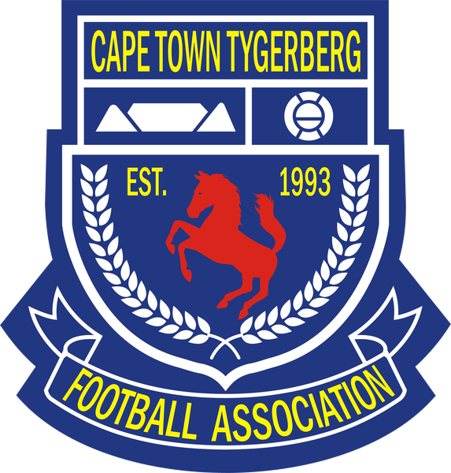

The Rules and Regulations of the Cape Town Tygerberg LFA
give every team the right to protest or lodge a complaint.
You dispute something about the match itself, for example an ineligible or unregistered player, or a matter you raised with the referee before or during the game.
Only the captain or a team official listed on the official team return, of a team directly involved in the game (Rules 11.1 and 11.12).
Raise it with the referee before or during the match. The referee records it on both team returns, signs it and tells the opposing team.
Ineligible player? An opponent who fielded an unregistered, suspended, banned or improperly registered player can be protested in writing within 4 days (Rule 11.13). Inspect their cards through the referee before the match (Rule 6.3), or you may forfeit the right to protest (Rule 6.3.1).
A protest without the fee and proof of payment in time is not entertained (Rule 11.2).
It must show the club name, the team protesting, the opposition and the date of the fixture (Rule 11.2). A deposit slip without these details will not be accepted.
Complete the prescribed Protest & Complaint Form. It must be signed by a club executive member.
R700, payable when you lodge the intention.
Email: dc@cttlfa.com
Both teams are asked to attend the hearing (Rule 11.8). The Disciplinary Committee hears and decides the protest.
You want to report misconduct or an offence by a team, official, player or club, rather than a dispute about the match result.
Any team, affiliate, official, player or club may lodge a complaint about any act of misconduct or alleged offence (Rule 12.1).
A complaint that misses these requirements is dismissed.
A referee's or assistant referee's decision connected with play, unless the complaint alleges corruption. Nor a matter on substantially the same facts as a grievance already lodged and entertained by CTTLFA or the Disciplinary Committee (Rule 12.1.4).
Complete the prescribed Protest & Complaint Form. It must be signed by a club executive member.
R700, payable when you lodge the intention.
Email: dc@cttlfa.com
The Disciplinary Committee hears and decides the matter. Complaints can lead to a forfeiture of points (Rule 12.2).
Upheld: the Disciplinary Committee imposes a sanction under the DC Code, which may include a points deduction, fines or suspensions.
Not upheld: no action is taken and the fee is forfeited.
Appeal in writing to the CTTLFA Appeal Committee within 7 days of being notified of the decision, with written reasons within a further 5 days (Rule 13.3).
Fee R1 000, paid within the 7 days (Rule 13.5). Some decisions cannot be appealed, including warnings, reprimands and fines under R1 000 on a club (Rule 13.1.1): check the rule first.
A further appeal to SAFA Cape Town costs R5 000, where allowed. First copy your notice to the CTTLFA Disciplinary Convenor (Rule 13.9.2).
Match officials who are not properly equipped or attired (Rule 2.12): an informal complaint must be lodged within 72 hours, with evidence (Rule 2.12.3).
Note it on the team return or send a written report to the General Secretary.
Contact the CTTLFA Disciplinary Convenor.
Email: dc@cttlfa.com
Website: www.cttfa.co.za/discipline
This guide is a summary for guidance only. The CTTLFA Rules and Regulations, DC Code and Constitution prevail in the event of any conflict. Refer to Rule 11 (Protests), Rule 12 (Complaints), Rule 13 (Appeals) and Rule 2.12.3 (Informal complaints).